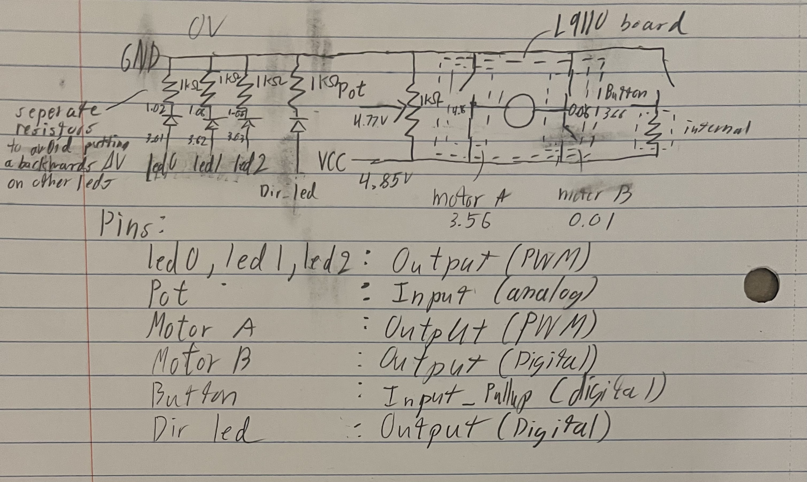

<div class="textcontainer">
<p class="margin"> </p>
<h3>Day 4: Microcontroller Programming</h3>
<h4>Motor control device</h4>
Since day 3, the circuitry was slightly updated but is largly the same, the only new feature being a red LED indicating the direction.<br>
Overall, this setup allows me to:<br>
  throttle the motor (via the potentiometer)<br>
  visually know how much power the motor is getting<br>
  change direction of the motor (via a button press)<br>
<br>
Mostly functions as intended barring the potentiometer maxing out early (should be between GND and 3.3V, not 5V) & the button sometimes double triggering (no clue)
<video width="100%" style="aspect-ratio: 4/3;" controls>
<source src="demo.mp4" type="video/mp4">
</video><br>
<h5>Schematic</h5><br>
<p></p><br>
<br>
<h5>Code</h5>
<pre><p class="code_background"><code>#include<vector>;
class Button {
bool last_state;
int pin;
public:
Button(int pin) {
this->pin = pin;
pinMode(pin, INPUT_PULLUP);
last_state = is_pressed();
}
bool is_pressed() {
int raw = digitalRead(pin);
return raw == 0;
}
bool was_pressed() {
bool new_state = is_pressed();
bool out = !last_state && new_state;
last_state = new_state;
return out;
}
};
std::vector<int> LEDS = {14, 27, 26};
const int MOTOR_A = 13;
const int MOTOR_B = 12;
const int POT = 25;
const int POT_MIN = 0;
const int POT_MAX = 4095;
const int FREQ = 5000;
const int RESOLUTION = 8;
const int PWM_MAX = (1 << RESOLUTION) -1;
Button DIR_BUTTON = Button(33);
const int DIR_LED = 32;
bool dir = true;
int clamp(int x, int min, int max) {
if (x < min) return min;
else if (x > max) return max;
else return x;
}
void write_led(int pot_val) {
int led_val = map(pot_val, POT_MIN, POT_MAX, 0, PWM_MAX * LEDS.size());
for (int i = 0; i < LEDS.size(); i++) {
ledcWrite(LEDS[i], clamp(led_val - i * PWM_MAX, 0, PWM_MAX));
}
}
void write_motor(int pot_val) {
int motor_val = map(pot_val, POT_MIN, POT_MAX, 0, PWM_MAX);
if (dir) {
digitalWrite(MOTOR_B, LOW);
ledcWrite(MOTOR_A, motor_val);
} else {
digitalWrite(MOTOR_B, HIGH);
ledcWrite(MOTOR_A, PWM_MAX - motor_val);
}
}
void setup() {
for (int i = 0; i < LEDS.size(); i++) {
pinMode(LEDS[i], OUTPUT);
ledcAttach(LEDS[i], FREQ, RESOLUTION);
}
pinMode(MOTOR_A, OUTPUT);
pinMode(MOTOR_B, OUTPUT);
ledcAttach(MOTOR_A, FREQ, RESOLUTION);
pinMode(POT, INPUT);
pinMode(DIR_LED, OUTPUT);
}
void loop() {
int pot_val = analogRead(POT);
if (DIR_BUTTON.was_pressed()) {dir = !dir;}
if (dir) digitalWrite(DIR_LED, HIGH);
else digitalWrite(DIR_LED, LOW);
write_led(pot_val);
write_motor(pot_val);
}
</code></p></pre>
</div>